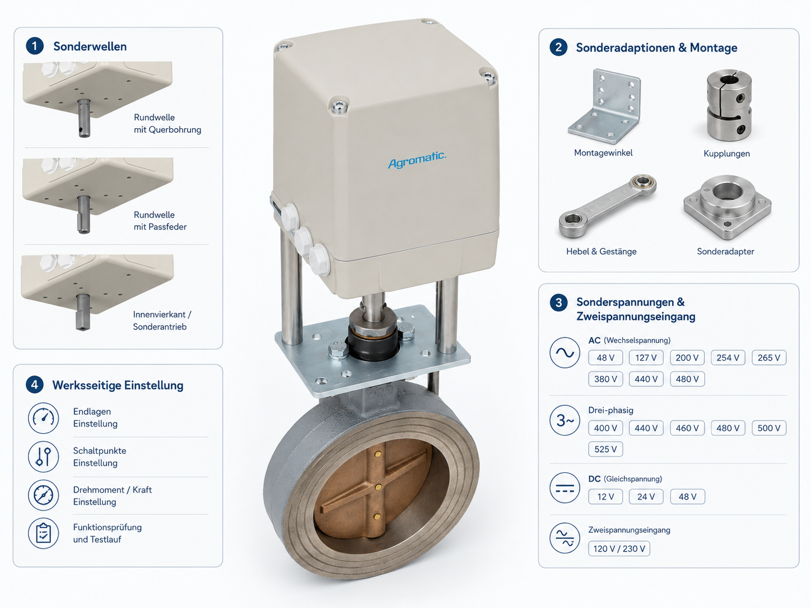

01 | Vibrationsstarke Umgebungen
Vibrationsoptimierte Antriebssysteme und speziell gefertigte Reglerlösungen für Zentrifugen, Bahntechnik und dynamische Industrieanwendungen.
Agromatic
Technische Sonderlösungen für industrielle Antriebstechnik, Ventilsysteme und anspruchsvolle Maschinenbauanwendungen.
Vibrationsoptimierte Antriebssysteme und speziell gefertigte Reglerlösungen für Zentrifugen, Bahntechnik und dynamische Industrieanwendungen.

Nach Erreichen der definierten Anpresskraft wird der Motor in Schließrichtung mechanisch abgeschaltet; die Haltekraft bleibt nicht nur über die Selbsthemmung der Spindel, sondern mechanisch mit Elastizität gespeichert und ohne Motorstrom erhalten.

Industrielle Signal- und Kommunikationslösungen zur intelligenten Integration von Sensorik, Antrieben und Automatisierungssystemen.

Sonderlösungen für vielfältige industrielle Anforderungen – von Einzel- bis Serienfertigung. Agromatic realisiert angepasste Stellantriebe für besondere Stellzeiten, Stellwege, Stellkräfte und Stellmomente, Sonderspannungen, Zweispannungseingänge, Sonderwellen, Montageteile, kundenspezifische Hubeinheiten und einbaufertig eingestellte Antriebe.